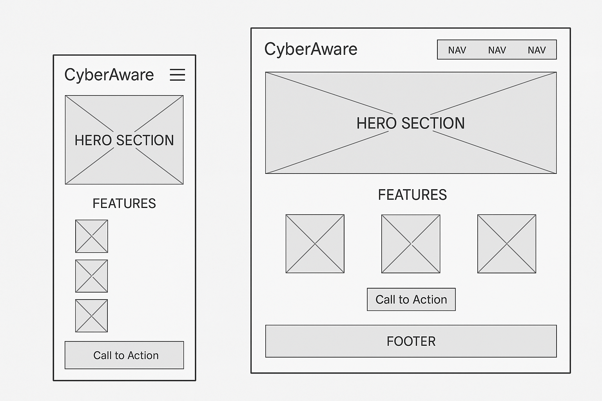

Site Name
CyberAware - This name was chosen because the site focuses on cybersecurity awareness, education, and tips for both individuals and small businesses.
Site Purpose
The purpose of this site is to educate users on basic cybersecurity principles, inform them about the latest threats, provide tools to test their security awareness, and offer safety tips tailored to small businesses.
Scenarios
- How can I protect my personal information online?
- What are some affordable ways for my small business to improve cybersecurity?
Color Schema
Chosen color scheme:
- Dark Blue (#003366): Used for headers and navigation bars.
- Light Gray-Blue (#f4f8fc): Used for background and content sections to maintain readability.
Typography
- Arial, sans-serif: Used for body text and general readability.
- Georgia, serif: Used for headings to give contrast and emphasis.
Wireframe
Below are simple wireframes for the homepage layout:
Mobile View
Desktop View